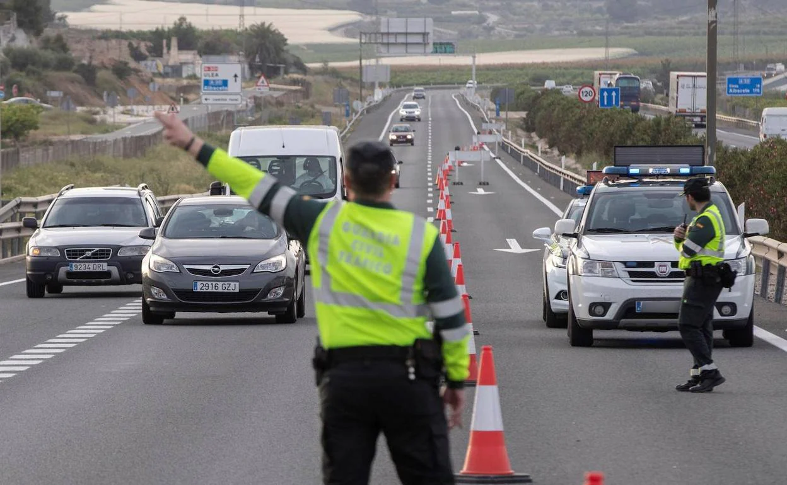

Nuestros Servicios
Patrullaje y Vigilancia 24/7
Contamos con un equipo de patrullas altamente entrenado que garantiza la seguridad en las calles las 24 horas del día, los 7 días de la semana.
Investigación de Delitos
Nuestros investigadores están dedicados a resolver casos con la mayor eficiencia, utilizando las más avanzadas técnicas forenses y de investigación.
Atención y Orientación a Víctimas
Brindamos apoyo integral a las víctimas de delitos, ofreciéndoles orientación, asesoramiento legal y apoyo psicológico.

Control de Tráfico y Seguridad Vial
Trabajamos para mantener el orden en las vías públicas, garantizando la seguridad de peatones y conductores a través de controles constantes.